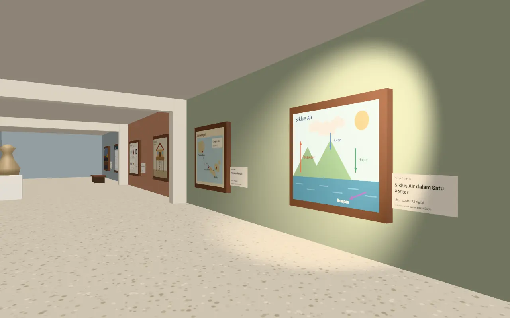
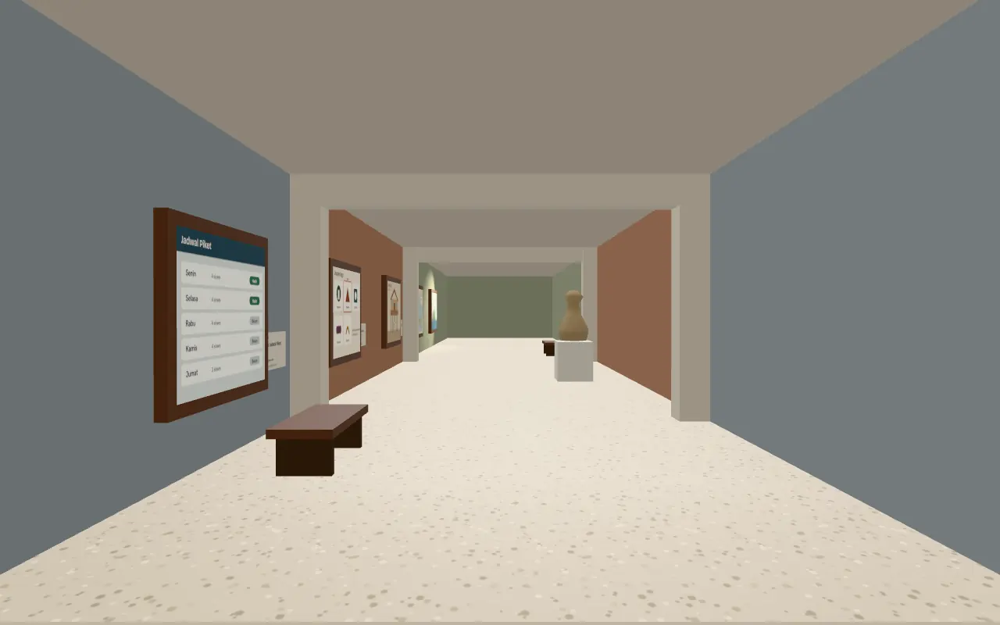

Enam karya kelas dalam satu lorong pameran
Pekan Karya Bukit Rawa · proyek konsep
Contoh pameran karya sekolah secara daring. Kamera berjalan di sepanjang galeri, berhenti di tiap karya. SMA Bukit Rawa adalah sekolah fiktif.
Gulir untuk berjalan masuk
Siklus Air dalam Satu Poster
Karya 1 dari 6
Menjelaskan penguapan, awan, hujan, dan resapan dengan empat panah berwarna.
VII-2 · poster A3 digital
Gambar contoh buatan Bikinin Studio
Peta Jalur Rempah
Karya 2 dari 6
Infografis jalur dagang cengkih dan pala dari Maluku ke pelabuhan Eropa abad ke-16.
XI IPS-1 · infografis
Gambar contoh buatan Bikinin Studio
Maket Rumah Panggung
Karya 3 dari 6
Skala 1:20 dari karton dan lidi, lengkap dengan tangga dan teras.
VIII-4 · maket
Gambar contoh buatan Bikinin Studio
Logo Koperasi Siswa
Karya 4 dari 6
Lima usulan logo, satu dipilih lewat pemungutan suara kelas.
XII-1 · desain logo
Gambar contoh buatan Bikinin Studio
Aplikasi Jadwal Piket
Karya 5 dari 6
Aplikasi web sederhana untuk membagi piket kelas dan mencatat kehadiran.
X RPL-2 · aplikasi web
Gambar contoh buatan Bikinin Studio
Foto Pasar Pagi
Karya 6 dari 6
Seri enam foto pedagang sayur sebelum pukul enam pagi.
Ekskul Fotografi · foto
Gambar contoh buatan Bikinin Studio

Pameran daring untuk karya sekolah Anda
Karya siswa difoto atau dipindai, lalu ditata di galeri 3D dengan keterangan tiap karya. Harga pameran 3D dihitung lewat penawaran tertulis. Untuk bahan pendukung, PPT tugas mulai Rp 3rb/slide dan logo mulai Rp 75rb.